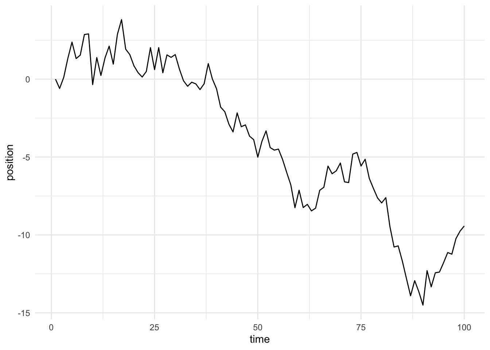
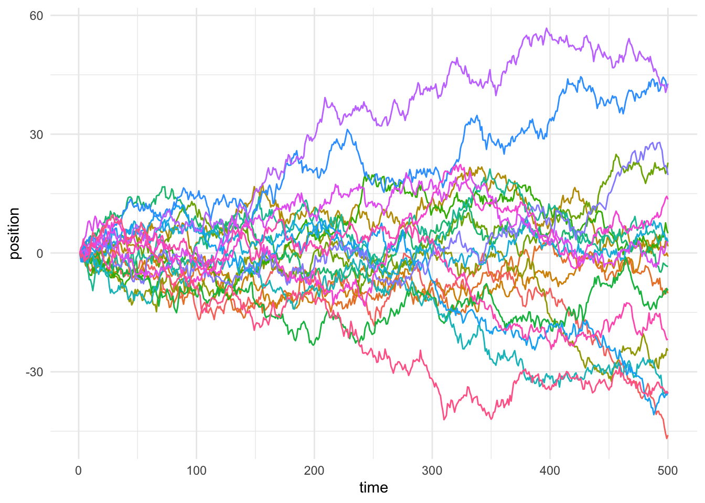

A Gentle Introduction to Markov Chains and MCMC
Contents
Introduction
Every other Friday at work, we have a meeting called All Hands, during the first half of which a member of the team gives a presentation. The presentation is split up into two pieces: A personal presentation – your favorite food, TV shows, books, etc. – and a mini-lesson, which can be about any topic of interest that’s unrelated to work. Yesterday it was my turn, and I gave my mini-lesson on Markov Chains and Markov Chain Monte Carlo. This post memorializes what I covered.
Markov Chains
First, what is a Markov Chain? It’s easiest to break it down into it’s component parts. A Markov Chain is a chain, or sequence of events, that follow the Markov Property. So, then, what’s the Markov Property? It’s actually quite intutive: The Markov Property says that the next state in a sequence (chain) is only dependent on the current state. Statisticians would call this “memorylessness,” and we can write out the property in its true mathematical form below, where $ X $ is a random variable and $ x_{t} $ is the probability distribution that $ X $ takes on at time $ t $.
$$ p(x_{t+1} | x_{t}, x_{t-1}, x_{t-2}, .. x_{0}) = p(x_{t+1} | x_{t}) $$
In plain English, all this definition is saying is that if you are following the Markov Property, then where you go next is only determined by where you are now, and how you got to where you are has no impact. At the end of my talk, one of my coworkers commented that this property is actually quite beautiful in a real-world sense, and I feel the same way. It certainly could have been the example of a guiding principle that I choose to follow that I used in my personal presentation.
So, now that we know what a Markov Chain is, let’s walk through an example. The most commonly seen type of Markov Chain is called a random walk. Simply, a random walk is a Markov Chain where the next state is just determined by the current state plus some random noise. I’ve coded up an example below:
|
|
|
|
That table shows a random walk with 100 steps, generated by adding standard normal noise to the position after each step. Let’s plot it and see what it looks like.
|
|

Cool! The walk starts at $ 0 $, and then jumps around randomly a bunch until $ t=100 $. It’ll be more interesting once we simulate 20 random walks.
|
|

So, what’s going on here? It basically looks how we’d expect. At any given time point, the mean position of the $ 20 $ is about zero, but the standard deviation of those positions goes up over time. Specifically, at any given time $ t $, the standard deviation of the positions should be roughly equal to $ \sqrt t $, because of how the variance is compounding. Remember, these random walks are Markov Chains because at every time $ t $, I defined the position $ y_{t+1} $ to be $ y_{t} + \mathcal{N}(0, 1) $, or the the next position is the current position plus a standard normal noise (i.e. zero-centered with unit variance).
Cool, so now we have an idea of what a Markov Chain is and how a random walk is an example of one. Now, why do we care? What kinds of problems can we solve with Markov Chains? It turns out that one thing we can use them to do is to calculate intractable integrals. What does this mean? Well, remembering back to a calculus class once upon a time, we know if we have some function $ f(x) = 2x $, we can integrate that function by following a one of a couple of rules. In this case, that rule is to raise the coefficient in front of the $ x $ to turn it into a power, such that the new exponent equals the old one plus one, and the new coefficient equals the old one divided by the new exponent. For $ f(x) $, we find $ F(x) = \int f(x) = x^{2} + c $, where $ c $ is a constant. However, in many applications, such as Bayesian statistics, we run into functions of hundreds or thousands of parameters that are intractable to integrate. In other words, even really, really powerful calculators can’t integrate them: there are just too many parameters. So, we’re stuck. How do we integrate a function that even a super powerful calculator can’t? In steps Markov Chain Monte Carlo, coming to the rescue.
Markov Chain Monte Carlo
It turns out that we can use Markov Chains to approximate the integral in cases where we can’t calculate it directly. This is an incredible powerful discovery, and one that we’ve only been able to really take advantage of in the past twenty or so years, as computing power has grown exponentially. So, how do we actually do it? Let’s frame it as a simple problem that’s isomorphic to the actual problem at hand.
Imagine you are the ruler of an island kingdom, which has four islands. Island 1 has population 1, Island 2 has population 2, Island 3 has population 3, and Island 4 has population 4. And, imagine that you want to spend time on each island proportional to the percentage of the total population of your kingdom that it makes up. In other words, you want to spend 10% of your time on Island 1, and so on. But, you have a problem: You don’t know how to add. Imagine that the only mathematical operation you know how to do is divide. Can you figure out a way to spend your time how you want without being able to calculate the total population of your kingdom?
Most likely, how you’d solve this problem isn’t immediately obvious, but there are a few brilliant algorithms that help us achieve our goal. One of them is proposed to you by two of your friends, Metropolis and Hastings. I’ve coded up their suggestion below:
|
|
Here’s the algorithm your friends propose:
- Pick a random island to start on.
- On each day, randomly select a new island to go to (the proposal island).
- Do one of the following, depending on the populations of the islands: i. If the proposal island has more people than the current island, go to the proposal island. ii. If it has fewer people, then flip a coin with probability equal to the proposal island’s population divided by the current island’s. If the coin comes up heads, go to the proposal island.
- Do it again a bunch of times.
So, how does this algorithm perform? Let’s try it out!
|
|
|
|
Unsurprisingly, with only $ 10 $ iterations the algorithm does not perform particularly well. But what about if we give it a lot more time? Let’s try $ 10,000 $ iterations.
|
|
|
|
Much better! After $ 10,000 $ iterations, we’re spending almost the exact proportion of time on each island that we want to be, as evidenced by the tiny error margins. In addition, the standard deviation of the error margins is 0.01747, which is tiny. That’s awesome! But what about if the system is more complex? Like, what if we had 100 islands?
|
|
|
|
No problem! Even with the extra islands, the mean error margin is still zero, and the standard deviation of the error margins is 0.18211, which is also small, but not as small as the simpler system. It’s true that a more complex system (i.e. more islands) would mean that we need more iterations to converge in probability to the proportions we’re shooting for, but the algorithm will still work with enough time. Let’s try running it one more time on the complex system, but this time with a million iterations.
|
|
|
|
Looks like that did the trick! The standard deviation of the error margins fell to 0.01485, just as we expected.
This algorithm is called the Metropolis-Hastings Algorithm, and it’s one of many in the class of Markov Chain Monte Carlo algorithms. Some others are the Gibbs Sampler and Hamiltonian Monte Carlo, both of which are frequently used in Bayesian statistics for estimating the parameters of regression models with hundreds of thousands of parameters. In short, these algorithms allow us to solve problems that were literally impossible to solve only two decades ago or so, which is an amazing feat!
Recap
- Markov Chains are not that scary! They’re just a memoryless sequence of events, meaning that where you came from doesn’t impact where you go next.
- Markov Chain Monte Carlo algorithms like the Metropolis-Hastings can be quite simple, and let us solve impossibly hard problems.